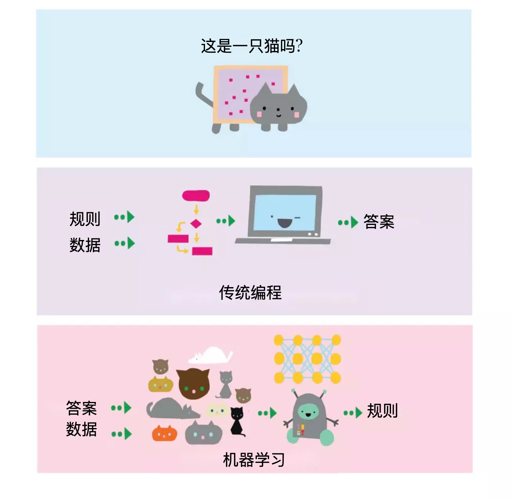
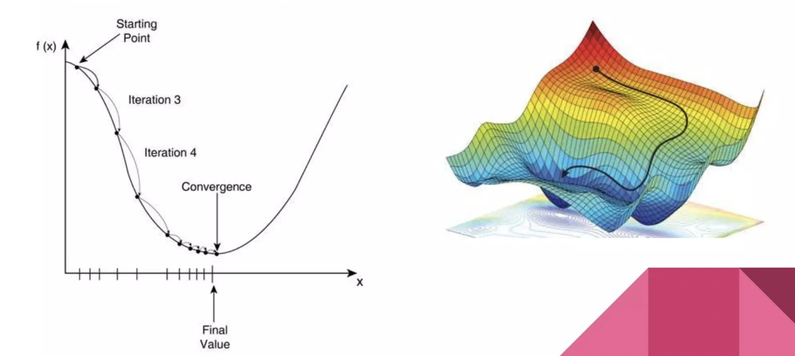
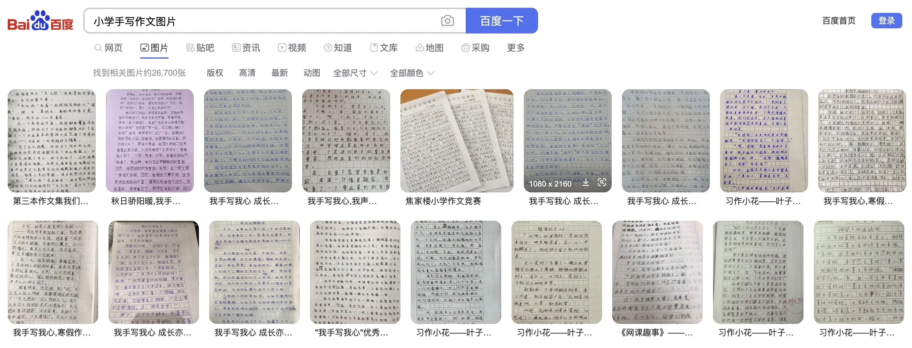
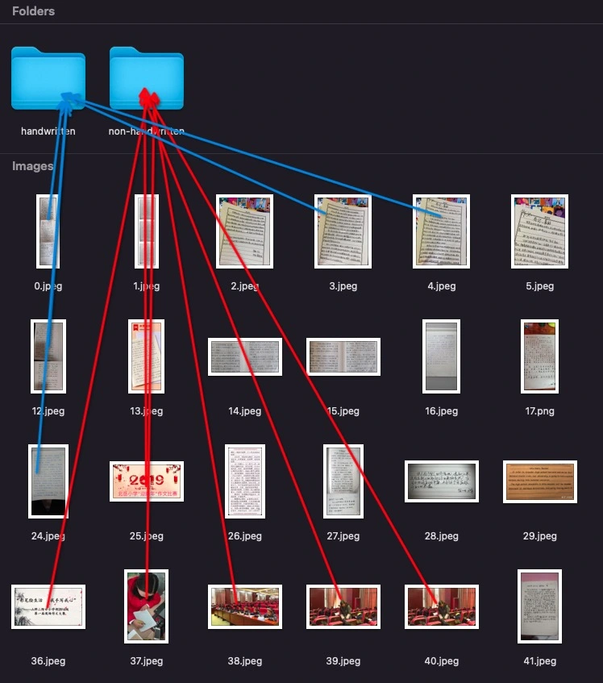
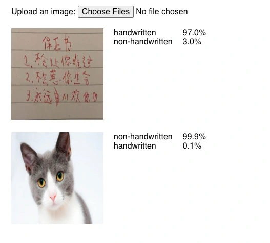
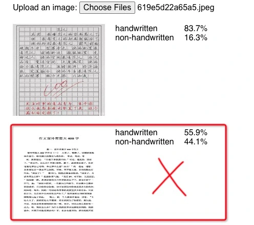
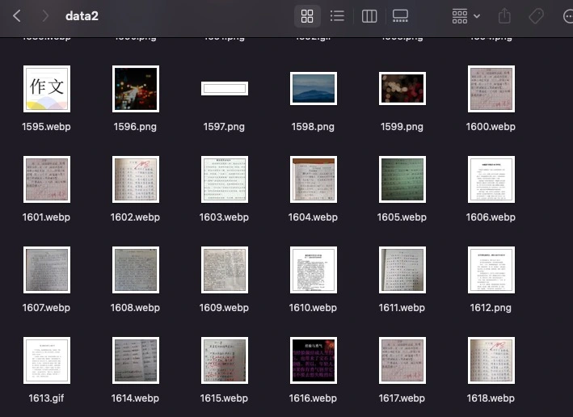
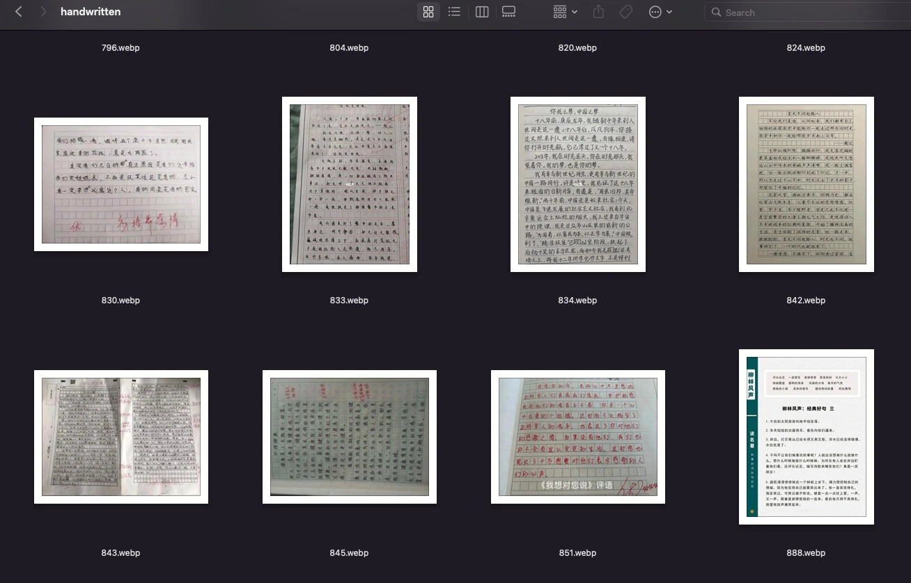

TensorFlow
前端判断是否为手写作文
- TensorFlow.js 介绍
- 为什么要在客户端做机器学习？
- 基础知识
- 准备数据
- 训练模型
- 验证模型
- 使用模型
TensorFlow.js
直接在浏览器和 Node.js 进行机器学习。
为什么要在客户端做机器学习？
- 节省服务器资源
- 可以离线使用
- 延迟低
- 隐私性好
机器学习
人工智能、机器学习和深度学习
机器学习：在预先定义好的可能性空间中，利用反馈信号的指引来寻找输入数据的有用表示。 深度学习：从数据中学习表示的一种数学框架。
新的编程范式
机器学习的一般流程
- 准备数据
- 训练模型
- 验证模型
- 使用模型
基础知识
目的：找最合适的权重（最小值的位置）
张量（Tensor）
多维数组损失函数
优化器
准备数据
下载数据
手动分类
训练模型
划分训练集和验证集
| 手写 | 非手写 | |
| 训练集 | 196 | 132 |
| 验证集 | 49 | 33 |
划分训练集和验证集
train_ds = tf.keras.utils.image_dataset_from_directory(
data_dir,
validation_split=0.2,
subset="training",
seed=123,
image_size=(img_height, img_width),
batch_size=batch_size)
val_ds = tf.keras.utils.image_dataset_from_directory(
data_dir,
validation_split=0.2,
subset="validation",
seed=123,
image_size=(img_height, img_width),
batch_size=batch_size)
创建模型
data_augmentation = tf.keras.Sequential(
[
tf.keras.layers.RandomFlip("horizontal",
input_shape=(img_height,
img_width,
3)),
tf.keras.layers.RandomRotation(0.1),
tf.keras.layers.RandomZoom(0.1),
]
)
model = tf.keras.Sequential([
data_augmentation,
tf.keras.layers.Rescaling(1./255),
tf.keras.layers.Conv2D(16, 3, activation='relu'),
tf.keras.layers.MaxPooling2D(),
tf.keras.layers.Conv2D(32, 3, activation='relu'),
tf.keras.layers.MaxPooling2D(),
tf.keras.layers.Conv2D(64, 3, activation='relu'),
tf.keras.layers.MaxPooling2D(),
tf.keras.layers.Dropout(0.2),
tf.keras.layers.Flatten(),
tf.keras.layers.Dense(128, activation='relu'),
tf.keras.layers.Dense(num_classes)
])
model.compile(
optimizer='adam',
loss=tf.keras.losses.SparseCategoricalCrossentropy(from_logits=True),
metrics=['accuracy'])
跑数据
epochs = 30
history = model.fit(
train_ds,
validation_data=val_ds,
epochs=epochs
)
不太准


再次准备数据
自动分类
for file_path in data2_dirs:
# ...
img = tf.keras.utils.load_img(
full_file_path, target_size=(img_height, img_width)
)
img_array = tf.keras.utils.img_to_array(img)
img_array = tf.expand_dims(img_array, 0) # Create a batch
predictions = model(img_array)
classname = class_names[np.argmax(predictions)]
shutil.move(full_file_path, os.path.join(data2_dir, classname, file_path))
因为准确率太低，目前自动分类的结果基本没帮助
再次训练
| 手写 | 非手写 | |
| 训练集 | 230+ | 360+ |
| 验证集 | 60+ | 100+ |
| 测试集 | 30+ | 50+ |
| 总计 | 342 | 520 |
结果：test loss, test acc: [1.1063129901885986, 0.8645833134651184]
使用刚才的模型继续自动分类
再次训练
| 手写 | 非手写 | |
| 训练集 | 360+ | 1030+ |
| 验证集 | 100+ | 290+ |
| 测试集 | 50+ | 140+ |
| 总计 | 528 | 1478 |
结果：test loss, test acc: [0.25132402777671814, 0.9453125]
验证模型
使用模型
Python 中使用
model = tf.saved_model.load(model_dir)
# 这里不用 model.predict(img_array)
predictions = model(img_array)
转为 Web 可用的模型
tensorflowjs_converter \
--input_format=tf_saved_model \
model \
web_model
JavaScript 中使用
const model = await tf.loadGraphModel(HANDWRITTEN_MODEL_PATH);
const img = tf.cast(tf.browser.fromPixels(imgElement), "float32");
const batched = img.reshape([1, IMAGE_SIZE, IMAGE_SIZE, 3]);
const predictions = model.predict(batched);